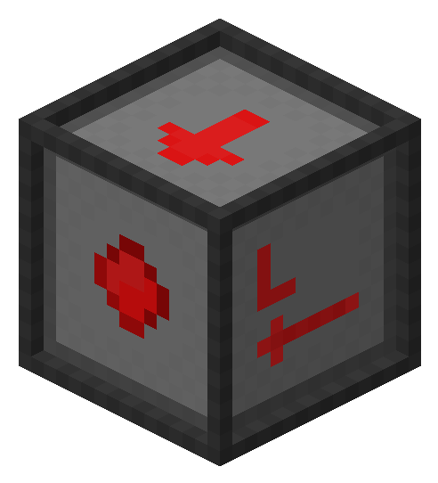

Redstone Controller documentation
Introductions
The Redstone Controller is a peripheral that allows computers to interface with redstone, both emiting and detecting redstone power!

Note that the Redstone Controller will accept both relative (left, right, front, back, top, bottom), and cardinal directions (north, south, east, west, up, down), the block texture also has labels for its left and right sides if your dyslexic like I am.
The Redstone Controller is categorized as "neetcomputers:redstone_controller" in the IO APILookup table
| getInput(side) | Detects and returns the redstone power level at the given side |
| getOutput(side) | Gets the current output setting for the given side |
| setOutput(side, powerLevel) | Sets the output setting for the side |
| setOutput(side, powered) | Sets the output setting for the side to either on or off |
| setAllOutputs(powerLevel) | Sets the output setting for all sides |
| setAllOutputs(powered) | Sets the output setting for all sides to either on or off |
| getSides() | Gets a table of the detected input levels on all sides with relative direction keys |
| getSidesCardinal() | Gets a table of the detected input levels on all sides with cardinal direction keys |
Functions in detail
getInput(side)
Detects and returns the redstone power level at the given side
Parameters: Side[String] Returns: IntegergetOutput(side)
Gets the current output setting for the given side
Parameters: Side[String] Returns: IntegersetOutput(side, powerLevel)
Sets the output setting for the side
Parameters: Side[String], PowerLevel[Integer] Returns: NonesetOutput(side, powered)
Sets the output setting for the side to either on or off
Parameters: Side[String], Powered[Bool] Returns: NonesetAllOutputs(powerLevel)
Sets the output setting for all sides
Parameters: PowerLevel[Integer] Returns: NonesetAllOutputs(powered)
Sets the output setting for all sides to either on or off
Parameters: Powered[Bool] Returns: NonegetSides()
Gets a table of the detected input levels on all sides with relative direction keys
Parameters: None Returns: NonegetSidesCardinal()
Gets a table of the detected input levels on all sides with cardinal direction keys
Parameters: None Returns: None